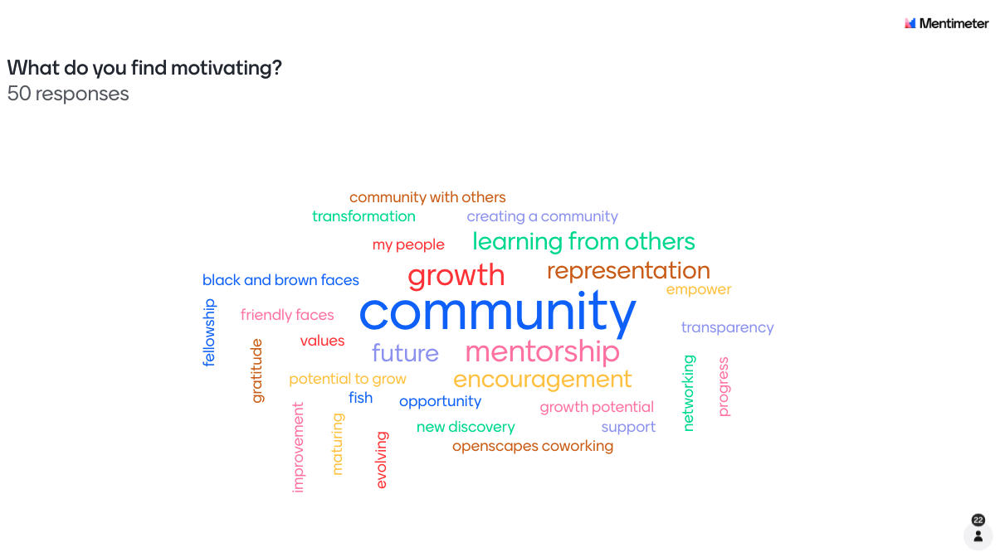
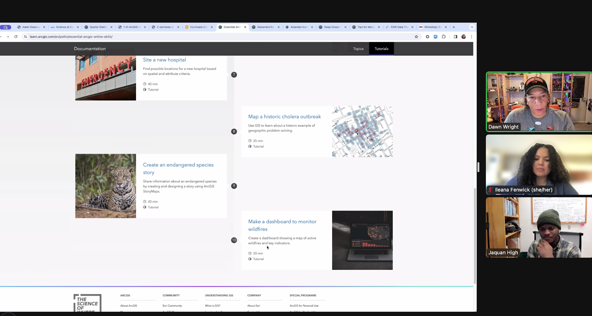
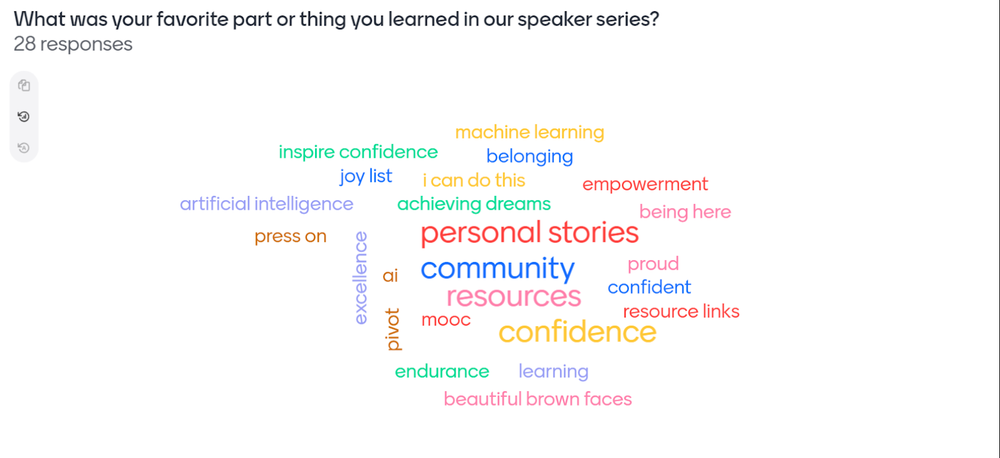
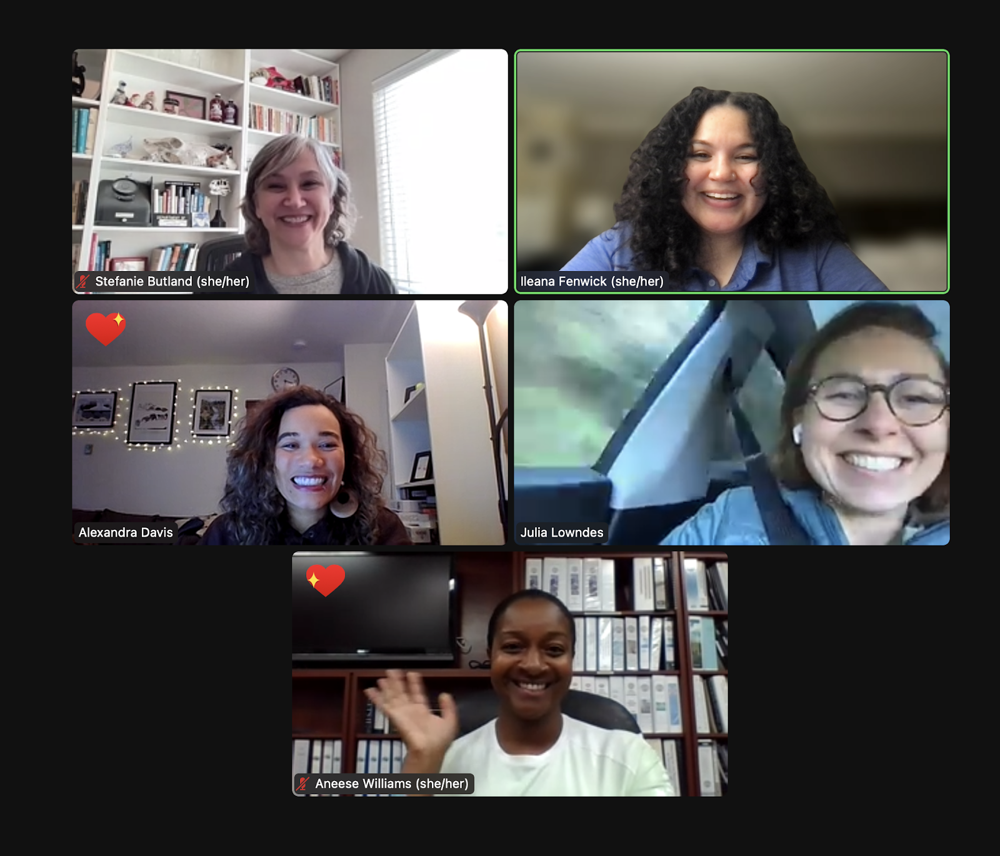

“Community matters, and it’s spaces and folks like this that truly help.” —2024 Pathways to Open Science participant
Pathways to Open Science is a remote event series for Black environmental & marine researchers to build community for the future of data intensive science. This program aims to reduce the isolation that can be commonplace in data-driven climate and sustainability research spaces for Black students and Historically Black College and University (HBCU) researchers. This is an ongoing collaboration with Black in Marine Science (BIMS), Black Women in Ecology, Evolution, and Marine Science (BWEEMS), HBCU marine science professors, and Openscapes. Over six weeks, we cultivate a community to enhance Black researchers’ speed and accessibility via data organization strategies, tutorials for learning new softwares, and Black guest speakers from our universities, government, industry, and non-profit network including from NASA and ESRI/ArcGIS. In our inaugural year (2023) Pathways had participants from around the globe join our first session, and in our second year, with the support of the Mozilla Alumni Fund we granted over 70 certificates of participation. Our team this year was composed of 5 organizers, 7 guest speakers, 2 social media coordinators from our non-profit partners, 8 HBCU professors, and a content manager. The program is led by Ileana Fenwick, with Alex Davis, PhD, and Aneese Williams, MSc. The 2024 series ran from January 25 to February 29.
Open science is the tools and skills enabling reproducible, transparent, and inclusive data-intensive science. Through thoughtful collaboration and intentional community building we have been able to successfully create a space that was largely lacking in our field for community amongst Black researchers. We are so proud to be a space where students and researchers at all levels feel safe learning new topics and tools, and sharing their authentic selves. Participants often expressed gratitude for the existence of a space that they previously struggled to find. We also pride ourselves on bringing the topic of open science to those who had previously not heard of or been exposed to it. The integration of open science principles into our research is a competitive skill that improves the inclusivity and reproducibility of science in coursework, jobs, and scientific research.
57 % of participant survey respondents had never heard of open science before participating in our program.
92% of participant survey respondents feel MORE connected with a community as a result of participating in our program
100% of participant survey respondents are aware of more resources to expand their data science skills.
Survey Question: What was most valuable about this program for you?
“Connecting with this community by far! Such a wonderful community!”
“Community! Especially community with other POC (I went to a PWI and my field is very white). It’s extremely encouraging to see people like me who are successful and are kind and willing to help pull people up with them.”
“The community building was the most valuable. It bleeds into and supports every other skill that I took away from the program.”
When we began planning this program we could have never imagined we would meet our goal in the way that we have. It has been deeply inspiring to see our community show up and build this space with us. We are so grateful for all of the participants who have joined us along the way!

Reduce, Reuse, Recycle: Iteration and New Collaborations
As our team began to prepare planning for the 2024 Pathways to Open Science series, we were faced with the daunting task of bringing to life a second iteration of our successful programming that would continue to serve our community in a meaningful way. We were excited to reuse what worked and welcome new faces into our space while simultaneously trying new ideas to engage our previous audience and designing to not be too repetitive. To address this goal, we found ourselves drawing from our common sustainability values of “Reduce, Reuse, and Recycle” to bring to life our second year of the Pathways series.
Reduce - minimizing the amount of work we create. Our team is a passionate group of organizers with full time jobs outside of our programming. We wanted to expand the program without discounting the enormous amount of work we did in our first year (2023) to build the Pathways to Open Science curriculum. To do so we decided early on that we were not going to build the program anew each year, but rather grow with our audience’s needs and explore how we can work in the wisdom we gained from running the program the previous year. One way we did this was by hiring a content manager! In our first year, our team took on the work of building out promotional content, captions, alternative text for images, and a posting schedule. This administrative work was valuable to our audience and promotion but time consuming for us as organizers. To reduce our workload this year we budgeted to include a content manager who would communicate with our non-profit partners, develop and execute a content calendar for the series, and produce all relevant content. It was an incredible relief to our team and freed up time for us to focus on the programming itself. The investment was well worth it and our content manager produced a seamless branded experience via social media for our program. Learn more about and connect with our incredible content manager, LaWanda Walker, here! This is one of many examples of reducing our work load to improve our organizing capacity this year.
Reuse - using items more than once. As marine and environmental researchers, the tenet of reuse is one we see often in our field and lives so the application to this project was a natural evolution of our development this year. We challenged ourselves to find a happy medium to reusing some content while not being overly repetitive. The goal is for participants to be able to come back year after year and enjoy our community. As organizers, we (Ileana, Alex, and Aneese) share our open science journeys, and previously we shared them in one session, however this year we reused our storytelling in a different capacity. Each of us took the lead for a community call and shared our story while leading the entire call. It was an opportunity to reuse our content (with updates and small edits) in a different form that felt new to our audience. It was a successful opportunity for each of us as organizers to grow and take responsibility for a full session. This also lowered the workload for all three of us by sharing the act of facilitating each session. We also kept the theme of each of our sessions the same, which saved our content manager time and allowed for her to invest time into new content and graphics for the program.

Recycle - putting to new use. A large piece of our programming is our incredible guest speakers giving their time to discuss their expertise and experience with our participants. They are valuable members of the Pathways to Open Science team that we will continue to invite to join us for years to come. Our opportunity to recycle this year came from wanting students to hear from our speakers in different capacities than their presentations last year, so we decided to invite these speakers to also join us as a guest host for the coworking sessions. This included: Q&A’s, networking opportunities, live tutorials, and more! It was a massive success to see our speakers in a different capacity and student participants loved getting to know our speakers in a different way. It was one successful example of how we hope to continue to expand our Pathways community and program offerings without making our speakers repeat the same presentation annually. Our speakers also enjoyed engaging with participants in small groups beyond their presentations last year.


In conclusion, using Reduce - Reuse - Recycle to amplify our previous work created time and capacity to incorporate new changes into our programming this year, the largest of which being our collaboration funded by the Mozilla Alumni Fund. Our team was supported by the alumni grant earned by PREreview and Openscapes. This funded our team’s time as well as the expansion of our team to include Antoinette Foster, PhD, an expert on racial equity principles and racially inclusive environments. Antoinette’s contribution to our work this year has been invaluable, not only did she share her wisdom and expertise with us as organizers, but she also presented to our participants in Community Call 2: Building our skills for a better tomorrow. We are also using the Mozilla funding for Antoinette’s production of a blog post for participants as a resource and form of support for researchers on their journey. This will be the first offering of its kind from our team to participants and we are excited to see how we can expand this in the future!
The Future of the Pathways to Open Science series
We had an amazing time seeing how our participants engaged with the Pathways to Open Science series this year! With its success comes an opportunity for us to continue to grow with our audience. As an organizing team we really found our stride in producing seamless online events, and our comfort translated to participant comfort and increased community engagement. Notably, this year we saw improved engagement on our community Slack group and an evolution of students’ needs that (pleasantly) surprised our team. We found that participants in the series this year were more precise in their interest to learn and practice specific data science tools, and many came prepared with questions for our team and speakers to address this. We even received feedback that participants are interested in longer coworking sessions!, which we previously shied away from to cut down on the time commitment for the program. We also saw that students were increasingly active in sharing their own personal experiences, asking for help, and engaging with our speakers. All of which will be considered in our next round of Pathways planning to produce an even better program offering next year.
We are excited to say that Openscapes is committed to supporting this event series annually. Openscapes has included program support for Pathways into a 3-year grant proposal with NOAA Fisheries. We plan for this to be a model we can grow, both in terms of longer term funded proposals and through empowering Mentors who can deliver these events in other places. We are also actively seeking out additional funding to continue compensating our team, speakers, and faculty partners and expand the program. Our team plans to meet in October 2024 to begin planning for the 2025 Pathways to Open Science series!
To learn more about the Pathways to Open Science program and view resources, recordings, and details from our 2023 and 2024 series please visit: https://openscapes.github.io/pathways-to-open-science/
See you next year!
With Gratitude,
The Pathways to Open Science Team

Meet our organizers:
Ileana Fenwick is PI (Principal Investigator) and Lead of the Pathways to Open Science program and a core Openscapes team member. She is an open science advocate and Marine Sciences Ph.D. Candidate at UNC Chapel Hill. Ileana’s research focuses on evaluating how marine communities respond to climate change and human impacts. Her work uses innovative quantitative methods to improve our ocean management outcomes.
Alex Davis, PhD, is co-organizing Pathways to Open Science as a representative of BWEEMS. She is a marine ecologist and conservation scientist working as a Postdoctoral Fellow on The Diversity Project at UCLA. Alex uses her skills with diving, GIS and spatial ecology to address issues with marine invasive species. Alex is on the Board of Directors for BWEEMS.
Aneese Williams, MSc, is co-organizing Pathways to Open Science as a representative of BIMS. She is a graduate of Hampton University where she studied Marine & Environmental Science. Aneese has an M.Sc. in Marine Biology & Fisheries from University of Miami Rosenstiel School of Marine and Atmospheric Science (RSMAS). Currently, Aneese is the Environmental Management Systems Coordinator for the City of West Palm Beach, FL. She manages an Environmental Education Program that allows employees to be more aware of their potential environmental impacts associated with their everyday tasks, highlighting the importance of protecting the environment. She is an expert in problem-solving with data, working to “do things better in less time”.
Julie Lowndes, PhD, founding director is a core Openscapes team member and provides support for the Pathways to Open Science program.
Stefanie Butland, MSc, is a core Openscapes team member and provides support for the Pathways to Open Science program.